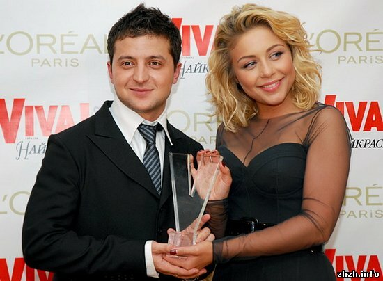
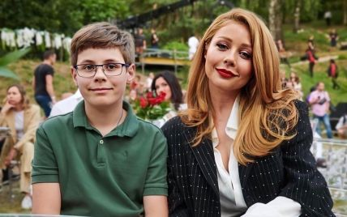

Евровидение В 2006 году Тине Кароль выпала возможность представлять Украину на песенном конкурсе Евровидение в Греции. Перед публикой певица выступала в коротком белом платье с глубоким декольте и красным поясом. Образ дополняли белые сапоги-казаки, раскрашенные в цветы, и украшение на руке. Show me your love – так называлась песня Тины и ее одноименный альбом. И хотя Тина Кароль заняла на международном конкурсе 7 место, ее образ запомнили все. К слову, в 2020 году певица стала судьей Национального отбора Евровидения в Украине.

"Танцы со звездами" Впоследствии Тина начала активно строить свою карьеру на телевидении. Вместе с Юрием Горбуновым она стала ведущей популярного телешоу "Танцы со звездами". Харизматичную, однако невежественную Тину сразу полюбила публика. Ее фраза: "Это было супер, супер, супер" стала легендарной, и ее часто упоминают в новых выпусках шоу. Ею восхищались и после эфира каждый ее образ обсуждали. Через 10 лет после закрытия проекта "Танцы..." снова начали транслироваться на телеэкранах. А в 2019 году популярная Тина Кароль стала соведущей и предстала уже в совершенно ином образе.
, 
Награды Кроме телевидения, Тина Кароль работала и над певческой карьерой. В 2008 году Тина впервые получает звание "Самой красивой женщины Украины" по версии "Vivа!", а глянец "Женский журнал" назвал ее "самой очаровательной женщиной Украины". Также она получила Орден Екатерины I, стала послом доброй воли и партнером ЮНИСЕФ. В следующем году Тина Кароль становится заслуженной артисткой Украины, получает титулы "самой красивой певицы Украины" и повторно титул "самой красивой женщины Украины". К слову, она получала эту награду трижды. И это вовсе не последняя награда Тины: за 15 лет карьеры она получила множество призов, наград и медалей.

Тина со своим сыном Вениамином, который на сегодняшний день живет и учиться в Лондоне.

Первая леди Украины Елена Зеленская представила в Нью-Йорке новую благотворительную акцию, где приняли участие две звезды украинского шоу-бизнеса певицы Тина Кароль и Юлия Санина.